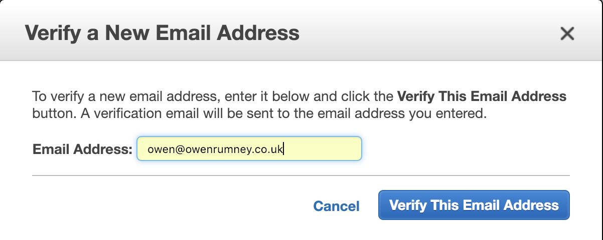
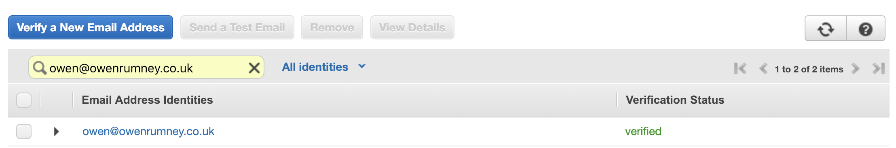
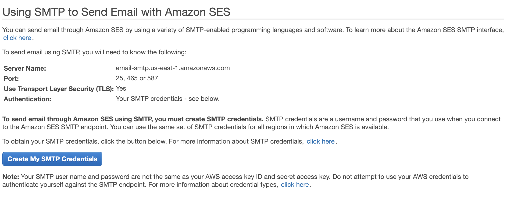
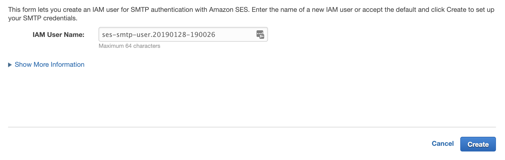
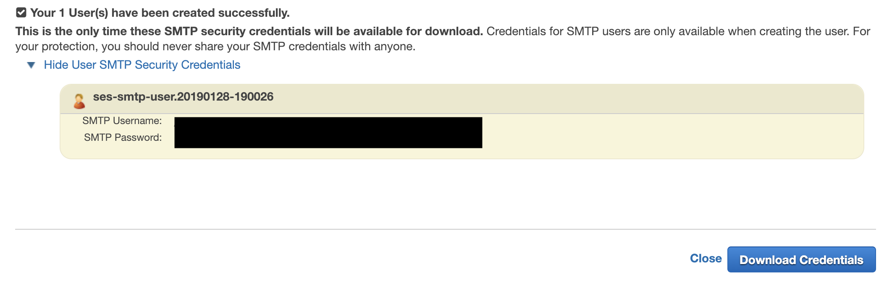
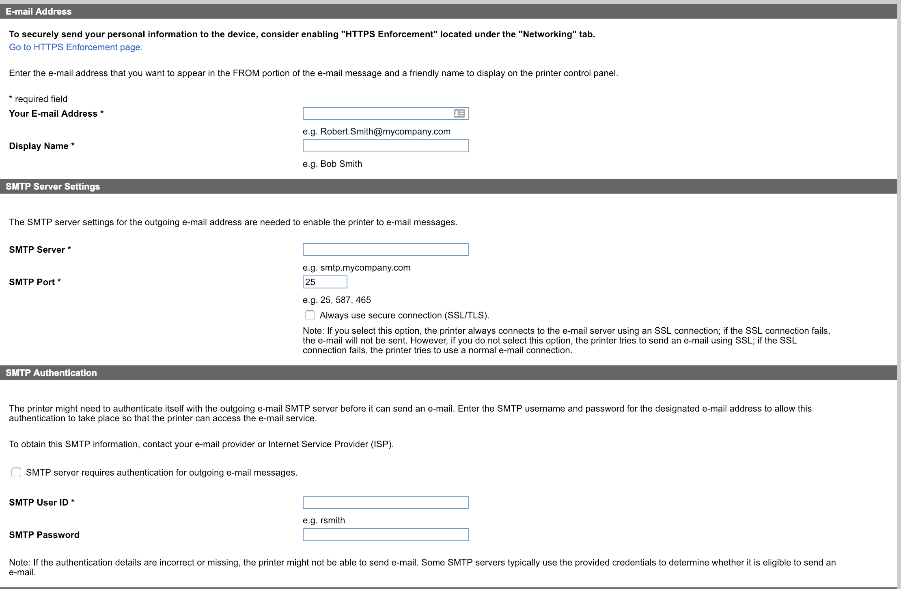

Overview
We have just replaced our aging Canon MX885 Multi Function printer with a new colour Laser printer, an HP M281fdw multi function. One of the scanning options is to “Scan to Email”. This is something I’ve found really useful in my current clients office.
What’s the issue then?
The issue I found setting up this functionality is that I need to configure the printer to relay through an SMTP server to send the messages to me. This is a pain and I didn’t want to have to stand up a simple SMTP server here just so I could use this feature.
My next thought was to try and use smtp.gmail.com. Even with the usual port and authenticating using my emails creds this still didn’t work properly so I figured why not make use of Amazon’s Simple Email Service. It’s simple, reliable and you can relay through it.
Setting it up
The following steps should get you working - the key sticking points are making sure that you’ve verified that you can send to the email address you’re configuring.
Verifying the Email Address
First things first is to log into the AWS Console and navigate to Simple Email Service.
Under Identity Management select Email Addresses then click the Verify a New Email Address button.
This will being up the dialog where you can specify the email you want to approve.

Once you’ve submitted this, you’ll get an email to the specified address which you need to validate by clicking the link in the email. You should then see the email verified as below;

Creating the SMTP credentials
The next thing you need to do is create some credentials with which to relay through the SMTP server with. Clicking on SMTP Settings under the Email Sending section will show you the details - as below;

Click on the Create My SMTP Credentials button and either accept the IAM user name or change to something more appropriate

Clicking Create will generate the new credentials for the IAM user which you can download and make a note of.

Configuring the Printer
Finally, we can update the configuration in the printer. In my case, the screen looks something like this.

Last step is to do a test scan and make sure it gets routed through your email.